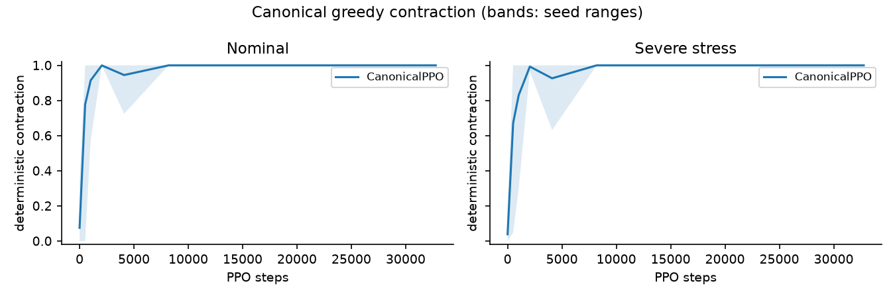
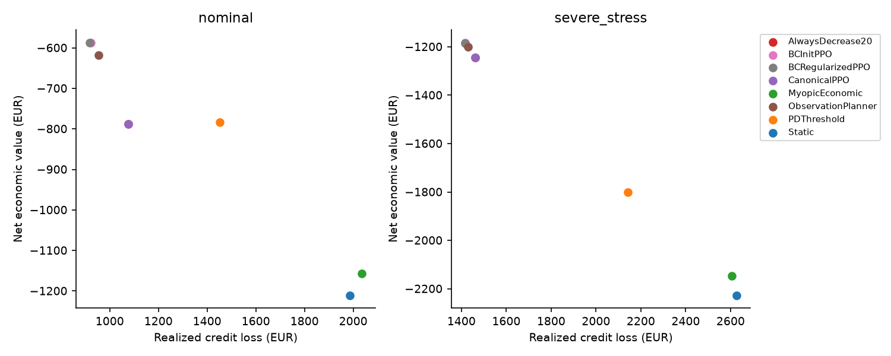
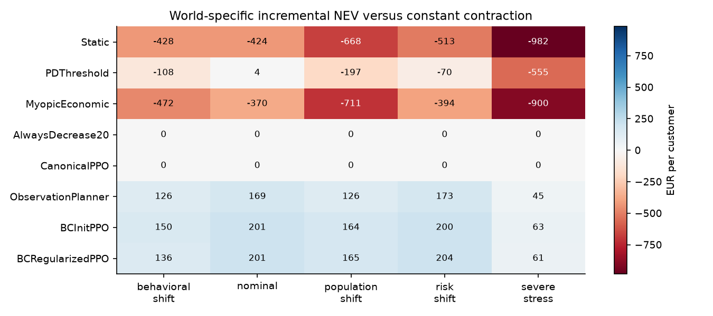

Featured research / Credit risk & reinforcement learning
Dynamic Credit Limit Optimization
When does a learned credit-limit policy earn its complexity over a simple rule?
I built a reproducible applied RL study combining a synthetic longitudinal customer simulator, calibrated default prediction, PPO and observable-state behavior cloning. Monthly limit changes affect purchasing capacity, repayment, future balances and default exposure. The study tests whether learned sequential control adds economic value over constant contraction.
- Nominal NEV gain vs contraction
- +€200.8synthetic EUR/customer · paired 95% CI [€120.7, €293.0]
- Severe-stress NEV gain vs contraction
- +€61.1synthetic EUR/customer · paired 95% CI [€32.8, €96.7]
- Final held-out evaluation
- 150customers · 5 training seeds · 5 declared worlds
The gains above compare BCRegularizedPPO with AlwaysDecrease20 at 32,768 training steps. They are conditional on the synthetic simulator and declared evaluation design.
What the learning diagnostics revealed
Canonical PPO collapses toward maximum contraction, but independent structural rollouts find visited states where hold or limit increases have higher estimated continuation value. Useful decision information is available from public observations. Initializing PPO from observable-state imitation substantially changes learning and retains state-dependent behavior.
From risk prediction to sequential decisions
A frozen, calibrated logistic model estimates 12-month default probability from observable histories. The actor receives 21 public customer and macro features and chooses monthly limit changes from −20%, −10%, unchanged, +10% or +20%. Admission rules enforce limits and restrict increases during severe delinquency. Hidden customer traits and future shocks are never policy inputs.
Final economic results
The final study follows 150 new held-out customers for up to 24 months, pairing identities and shocks across policies. Five training seeds and two budgets (32,768 and 262,144 steps) are evaluated in nominal, severe-stress, population-shift, behavioral-shift and risk-shift worlds. Checkpoints and the regularization schedule are selected on separate validation data. The table shows the primary budget; intervals use paired seed/customer bootstrap resampling.
| Policy | Nominal NEV (€) | Stress NEV (€) |
|---|---|---|
| AlwaysDecrease20 | −787.6 | −1,245.7 |
| CanonicalPPO | −787.6 | −1,245.7 |
| ObservationPlanner | −618.2 | −1,201.1 |
| BCInitPPO | −586.9 | −1,182.3 |
| BCRegularizedPPO | −586.8 | −1,184.6 |
BCRegularizedPPO improves NEV over contraction across the five declared worlds. Its worst-world gain is +€61.1 per customer (paired 95% CI [€32.3, €97.4]); this interval recomputes the worst world within each bootstrap replicate. All absolute NEV values remain negative.



Evaluation and reproducibility: independent counterfactual checks distinguish teacher preservation from economic value; trajectory IS/WIS diagnostics expose failures under poor overlap. Frozen tables, configurations, manifests, tests and a portable smoke protocol support inspection and reproduction. Standard replay requires the frozen research artifacts; smoke checks software integration only. The separate portfolio-allocation benchmark is not pooled with these customer results.